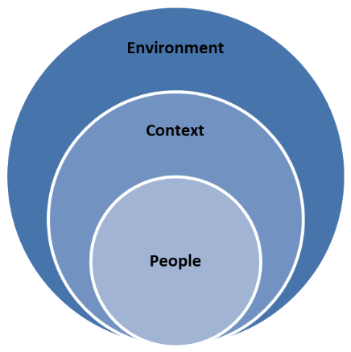
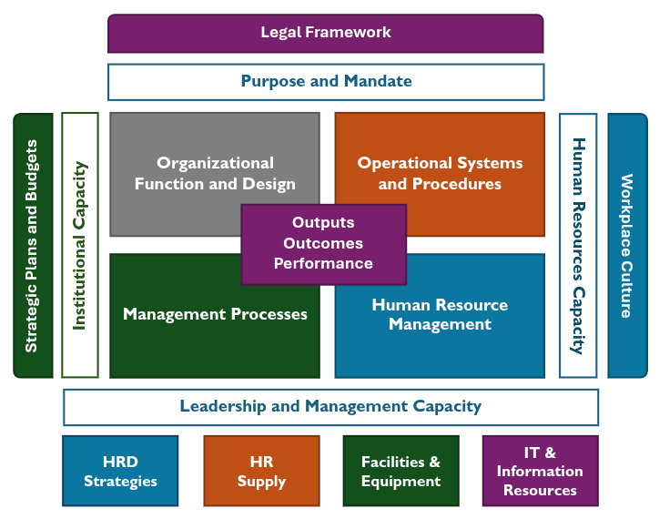
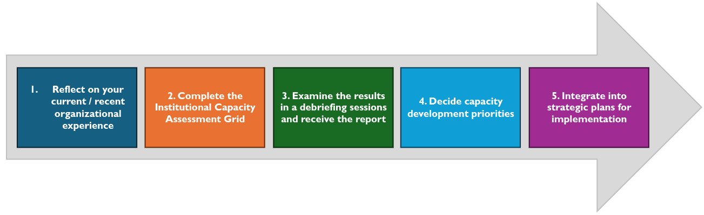
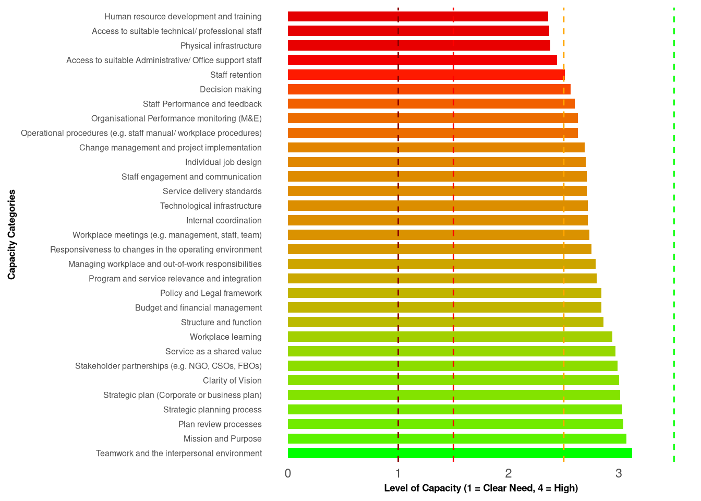

Institutional Capacity Assessment Report - Vanuatu Public Service
Overall Assessment Across All Ministries
List of Abbreviations
| Abbreviation | Definition |
|---|---|
| CSO | Civil Society Organization |
| FBO | Faith-Based Organization |
| HRM | Human Resource Management |
| ICA | Institutional Capacity Assessment |
| ICAG | Institutional Capacity Assessment Grid |
| IT | Information Technology |
| M&E | Monitoring and Evaluation |
| MALFFB | Ministry of Agriculture, Livestock, Forestry, Fisheries and Biosecurity |
| NGO | Non-Governmental Organization |
| NSDP | National Sustainable Development Plan |
| OECD | Organisation for Economic Co-operation and Development |
| OPSC | Office of the Public Service Commission |
| PSC | Public Service Commission |
| UNDP | United Nations Development Programme |
Acknowledgments
We express our sincere gratitude to all staff across the Vanuatu Public Service for their participation in the Institutional Capacity Assessment (ICA) survey conducted in August 2025. Their valuable insights have been instrumental in identifying key areas for capacity development across all ministries. We also thank the Vanuatu Public Service Commission (PSC) for initiating and supporting this assessment process. Special thanks to the Vanuatu Bureau of Statistics (VBoS) for digitizing the 2025 PSC ICA report, enabling automated data processing, analysis, and report generation for future ICA surveys. This collaborative effort underscores our commitment to strengthening public institutions in alignment with the National Sustainable Development Plan (NSDP).
Introduction
The NSDP’s society pillar goal 6 aims for “strong and effective institutions for ensuring a dynamic public sector with good governance principles and strong institutions delivering the support and services expected by all citizens of Vanuatu.” The Office of the Public Service Commission’s (OPSC) development program and policy objectives for institutional capacity assessment and development are guided by this goal.
This report provides background on the ICA process undertaken in August 2025 with staff from all ministries and presents the aggregated results. The Vanuatu Public Service is encouraged to review and verify this report and develop plans to address identified shortfalls or improvements in institutional capacity, ensuring alignment with the NSDP.
Background
What is meant by “capacity” and “capacity development”?
The phrase “we need more capacity” often refers to issues like insufficient staffing, need for training, inadequate office space, overly ambitious strategies, outdated systems or infrastructure, or limited budgets. These reflect aspects of capacity, but none fully define it.
‘Capacity’ is a common term in international, organizational, and community development. A shared understanding is crucial for effective capacity development planning. Key perspectives include:
On the nature of capacity…
“…the ability of individuals, institutions, and societies to perform functions, solve problems, and set and achieve objectives in a sustainable manner.” (United Nations Development Programme, 2009, p. 5)
On the development of capacity…
Capacity development involves much more than enhancing the knowledge and skills of individuals. It depends crucially on the quality of the organisations in which they work. In turn, the operations of particular organisations are influenced by the enabling environment – the structures of power and influence and the institutions – in which they are embedded. Capacity is not only about skills and procedures; it is also about incentives and governance. (Organisation for Economic Co-operation and Development, 2006, p. 12)
Capacity development is a locally driven process of learning by leaders, coalitions and other agents of change that bring about changes in socio-political, policy-related, and organizational factors to enhance local ownership for and the effectiveness and efficiency of efforts to achieve a development goal. (Otoo, Agapitova, & Behrens, 2009, p. 3)
Capacity involves people, actions, and results within specific contexts. Capacity development is about learning and change to achieve desired outcomes. Institutional capacity development aims to enhance the public service’s ability to meet its responsibilities.
Capacity is a dynamic, emergent property (Fowler & Ubels, 2010, p. 17), manifesting in individual skills, coordinated workgroup actions, or public service delivery.

Figure @ref(fig:fig-factors-influencing-capacity) identifies factors influencing capacity in the public service. Ministries operate under legal frameworks and policies like the NSDP, defining their responsibilities and required capacities. Institutional capacity (influenced by strategic plans and budgets) and human resource capacity (shaped by workplace culture) are core, supported by organizational design, operational systems, HRM, and management processes. Leadership, IT, facilities, equipment, and human resource development are critical enablers.
Key points for capacity development planning:
- Capacity involves people’s knowledge, skills, and collaborative actions.
- Strategic goals drive capacity needs, necessitating assessments.
- Capacity changes should be measurable through activities, outputs, outcomes, and community impacts.
- Capacity development is a long-term process requiring resources and perseverance.
- As an emergent property, capacity requires careful observation for timely development.
Institutional Capacity Assessment Grid
How the Vanuatu Public Service’s institutional capacity was assessed
The OPSC’s Framework for Institutional Capacity Assessment and Development (Appendix A) clarifies capacity needs and approaches at the public service level, focusing on organizational design, HRM, operational systems, leadership, facilities, and coordination.
The Institutional Capacity Assessment Grid (ICAG) aims to:
- Identify strongest and weakest capacity areas across the public service.
- Assess capacity changes over time through repeated ICAG applications.
- Highlight differing views to spark discussion.
In August 2025, 416 staff across all ministries participated, evaluating 31 capacity elements using the ICAG. Respondents scored each element from 1 (Clear Need) to 4 (High) based on descriptive statements.
The ICAG is not a scientific tool but provides an indicative “temperature” of capacity to guide improvement. It supports capacity development planning, as shown in Figure @ref(fig:fig-five-steps-assessing-planning-capacity-development).

This report supports Step 3, encouraging examination of key capacity areas. The ICAG helps staff reflect on capacity, define priorities, establish baselines, and identify support opportunities from OPSC or partners.
Methodology
Data Collection
The ICAG assessed organizational capacity across all ministries using Microsoft Office 365 Forms, digitized by VBoS. Staff rated 31 capacity categories from 1 (Clear Need) to 4 (High) based on descriptive statements (e.g., “little shared understanding” to “clear and compelling vision”). Responses were collected in a spreadsheet, including respondent details and ratings as text.
Data Processing
VBoS undertook:
- Data Extraction: Responses were exported into a spreadsheet.
- Data Cleaning: Text responses were converted to numeric scores (A = 1, B = 2, C = 3, D = 4). Missing or unclear responses were marked as missing.
Data Analysis
VBoS analyzed the data using R:
- Loading the Dataset: All data was imported (Appendix E).
- Calculating Mean Scores: Averages were computed for each capacity category across 416 responses.
- Identifying Strongest and Weakest Capacities: Top two categories were marked as strongest; those with mean scores ≤ 2 as weakest.
- Rating Distribution: Counts of scores (1–4) per category were calculated.
- Visualization Data: Mean scores were prepared for bar plots.
- Visualization: Bar plots showed categories ordered from most to least developed, with colors and dashed lines indicating capacity levels.
How the ICAG Scale and Analysis Methods Were Chosen
The ICAG scale (1–4) reflects capacity levels within the Vanuatu Public Sector, with descriptors tailored to local challenges. Mean scores were calculated from 416 responses in August 2025. A threshold of ≤ 2 identifies urgent gaps, aligning with NSDP goals to prioritize resource allocation.
Overview of Results
The Vanuatu Public Service, tasked with implementing national priorities and the NSDP, faces challenges like limited resources. It is shifting toward collaboration with government agencies, NGOs, CSOs, and FBOs, requiring specific capacities. The August 2025 ICAG assessment, involving 416 staff, evaluated 31 capacity categories.
The analysis shows strengths in strategic planning and mission clarity but gaps in infrastructure, responsiveness, and financial management, guiding resource allocation to align with NSDP goals.

Strongest Capacities
Based on Figure @ref(fig:fig-summary-bar), capacities with moderate to high levels include:
- Mission and Purpose: “Clear expression of organisation’s reason for existence which reflects its purpose and values; held by many within the organisation and referred to often.”
- Strategic plan (Corporate or business plan): “The plan is in place, is up to date and links well to the mission; Most strategies in the plan have been developed into clear projects with budgets and activities well defined to guide work and program planning; Most staff are aware of the plan, use it and were consulted when it was developed; Plans are used to guide management decisions.”
| Capacity Category | Mean Score | Type |
|---|---|---|
| Teamwork and the interpersonal environment | 3.12 | Strongest |
| Mission and Purpose | 3.07 | Strongest |
Top 10 Development Priorities and Recommendations
The OPSC analysis identifies 10 capacity areas with mean scores ≤ 2.5 as priorities for development, indicating performance at or below “Basic.” These are critical for enhancing effectiveness and aligning with NSDP goals.
| Capacity Category | Mean Score | Recommended Action |
|---|---|---|
| Human resource development and training | 2.36 | Develop a clear vision statement through staff workshops |
| Access to suitable technical/ professional staff | 2.37 | Review and update policy/legal framework with legal experts |
| Physical infrastructure | 2.38 | Implement training on environmental responsiveness |
| Access to suitable Administrative/ Office support staff | 2.44 | Establish an inclusive strategic planning committee |
Capacities Requiring Urgent Development
Among the priorities, Managing workplace and out-of-work responsibilities has a mean score indicating “Clear Need,” characterized by: “Staff find it difficult to attend work and achieve required hours; they feel pulled by out-of-work responsibilities, leading to high unauthorized absences. Management recognizes the issue but fails to act.” This requires immediate action to support the public service’s objectives.
Appendix A: Institutional Capacity Assessment Grid
The ICAG is a diagnostic tool tailored to capture capacity data relevant to the Vanuatu Public Service. It evaluates 31 capacity categories, with respondents selecting statements that best describe performance, scored from 1 (Clear Need) to 4 (High). The tool is indicative, designed to spark discussion and guide capacity development planning.
Appendix B: Descriptive Statistics
The following table provides descriptive statistics for each capacity category based on 416 responses.
| Category | Mean | SD | Min | Max | Median |
|---|---|---|---|---|---|
| Clarity of Vision | 3.00 | 0.87 | 1 | 4 | 3 |
| Mission and Purpose | 3.07 | 0.79 | 1 | 4 | 3 |
| Policy and Legal framework | 2.84 | 0.85 | 1 | 4 | 3 |
| Responsiveness to changes in the operating environment | 2.75 | 0.76 | 1 | 4 | 3 |
| Strategic plan (Corporate or business plan) | 3.01 | 0.79 | 1 | 4 | 3 |
| Strategic planning process | 3.03 | 0.78 | 1 | 4 | 3 |
| Plan review processes | 3.04 | 0.83 | 1 | 4 | 3 |
| Budget and financial management | 2.84 | 0.83 | 1 | 4 | 3 |
| Program and service relevance and integration | 2.80 | 0.84 | 1 | 4 | 3 |
| Structure and function | 2.86 | 0.84 | 1 | 4 | 3 |
| Individual job design | 2.70 | 0.88 | 1 | 4 | 3 |
| Operational procedures (e.g. staff manual/ workplace procedures) | 2.63 | 0.88 | 1 | 4 | 3 |
| Internal coordination | 2.72 | 0.76 | 1 | 4 | 3 |
| Access to suitable Administrative/ Office support staff | 2.44 | 0.89 | 1 | 4 | 2 |
| Access to suitable technical/ professional staff | 2.37 | 0.89 | 1 | 4 | 2 |
| Staff Performance and feedback | 2.60 | 0.87 | 1 | 4 | 3 |
| Human resource development and training | 2.36 | 0.87 | 1 | 4 | 2 |
| Staff retention | 2.51 | 0.95 | 1 | 4 | 3 |
| Decision making | 2.56 | 0.94 | 1 | 4 | 3 |
| Staff engagement and communication | 2.71 | 0.85 | 1 | 4 | 3 |
| Workplace meetings (e.g. management, staff, team) | 2.73 | 0.96 | 1 | 4 | 3 |
| Change management and project implementation | 2.69 | 0.91 | 1 | 4 | 3 |
| Service delivery standards | 2.71 | 0.78 | 1 | 4 | 3 |
| Stakeholder partnerships (e.g. NGO, CSOs, FBOs) | 2.99 | 0.85 | 1 | 4 | 3 |
| Organisational Performance monitoring (M&E) | 2.63 | 0.91 | 1 | 4 | 3 |
| Teamwork and the interpersonal environment | 3.12 | 0.81 | 1 | 4 | 3 |
| Service as a shared value | 2.97 | 0.81 | 1 | 4 | 3 |
| Workplace learning | 2.94 | 0.86 | 1 | 4 | 3 |
| Managing workplace and out-of-work responsibilities | 2.79 | 0.88 | 1 | 4 | 3 |
| Physical infrastructure | 2.38 | 0.95 | 1 | 4 | 2 |
| Technological infrastructure | 2.72 | 0.83 | 1 | 4 | 3 |
Appendix C: Planning for Institutional Capacity Development
The following process helps the Vanuatu Public Service:
- Interpret ICAG results.
- Identify priorities and strategies for capacity needs.
- Integrate strategies into 2025 and future business plans.
Step 1: Gather senior staff to examine results
Review the report step-by-step, exploring anomalies or unexpected results.
Step 2: Identify key ideas for capacity development
Section 3.3 outlines priorities. For each, consider:
- What can we do in the next 12 months to develop capacity?
- Are additional resources needed? If so, where from?
- What changes are required? What to keep, stop, or start?
- How will changes be embedded into policies or systems?
- How will success be measured? (M&E)
Step 3: Integrate strategies into 2025 and subsequent business plans
Embedding changes in annual plans ensures budgeting and monitoring.
Appendix D: References
Fowler, A., & Ubels, J. (2010). The multi-faceted nature of capacity: Two leading models. In J. Ubels, N. Acquaye-Baddoo, & A. Fowler (Eds.), Capacity development in practice (pp. 11–24). Earthscan.
Organisation for Economic Co-operation and Development. (2006). The challenge of capacity development: Working towards good practice. OECD Publishing. https://www.oecd.org/dac/conflict-fragility-resilience/docs/challenge-capacity-development.pdf
Otoo, S., Agapitova, N., & Behrens, J. (2009). The capacity development results framework: A strategic and results-oriented approach to learning for capacity development. World Bank Institute.
United Nations Development Programme. (2009). Capacity development: A UNDP primer. UNDP.
Appendix E: R Code for Data Analysis
Below is the R code used for data processing and analysis:
# Load libraries
library(dplyr)
library(tidyr)
library(ggplot2)
library(kableExtra)
library(readr)
library(stringr)
# Load data
data <- read_csv("ica_cleaned_data.csv", show_col_types = FALSE)
year <- 2025
total_responses <- nrow(data)
# Define capacity categories
capacity_categories <- c(
"Clarity of Vision",
"Mission and Purpose",
"Policy and Legal framework",
"Responsiveness to changes in the operating environment\n",
"Strategic plan (Corporate or business plan)",
"Strategic planning process",
"Plan review processes",
"Budget and financial management",
"Program and service relevance and integration",
"Structure and function",
"Individual job design",
"Operational procedures (e.g. staff manual/ workplace procedures)",
"Internal coordination",
"Access to suitable Administrative/ Office support staff",
"Access to suitable technical/ professional staff",
"Staff Performance and feedback",
"Human resource development and training",
"Staff retention",
"Decision making",
"Staff engagement and communication",
"Workplace meetings (e.g. management, staff, team)",
"Change management and project implementation",
"Service delivery standards",
"Stakeholder partnerships (e.g. NGO, CSOs, FBOs)",
"Organisational Performance monitoring (M&E)",
"Teamwork and the interpersonal environment",
"Service as a shared value",
"Workplace learning",
"Managing workplace and out-of-work responsibilities",
"Physical infrastructure",
"Technological infrastructure"
)
# Use all data
all_data <- data
# Calculate mean scores
category_stats <- all_data %>%
select(all_of(capacity_categories)) %>%
summarise_all(mean, na.rm = TRUE) %>%
pivot_longer(cols = everything(), names_to = "Category", values_to = "Mean_Score") %>%
mutate(Mean_Score = round(Mean_Score, 2)) %>%
mutate(Category = str_trim(gsub("\n", "", Category)))
# Strongest capacities
strongest <- category_stats %>%
arrange(desc(Mean_Score)) %>%
slice_head(n = 2) %>%
select(Category, Mean_Score)
# Weakest capacities
weakest <- category_stats %>%
filter(Mean_Score <= 2) %>%
arrange(Mean_Score) %>%
select(Category, Mean_Score)
# Rating counts
rating_counts <- all_data %>%
select(all_of(capacity_categories)) %>%
pivot_longer(cols = everything(), names_to = "Category", values_to = "Score") %>%
mutate(Category = str_trim(gsub("\n", "", Category))) %>%
group_by(Category, Score) %>%
summarise(Count = n(), .groups = "drop") %>%
pivot_wider(names_from = Score, values_from = Count, values_fill = 0)
# Descriptive statistics
desc_stats <- all_data %>%
select(all_of(capacity_categories)) %>%
summarise(across(everything(), list(
mean = ~mean(., na.rm = TRUE),
sd = ~sd(., na.rm = TRUE),
min = ~min(., na.rm = TRUE),
max = ~max(., na.rm = TRUE),
median = ~median(., na.rm = TRUE)
))) %>%
pivot_longer(everything(), names_to = c("Category", ".value"), names_sep = "_") %>%
mutate(across(c(mean, sd), ~round(., 2)),
Category = str_trim(gsub("\n", "", Category)))